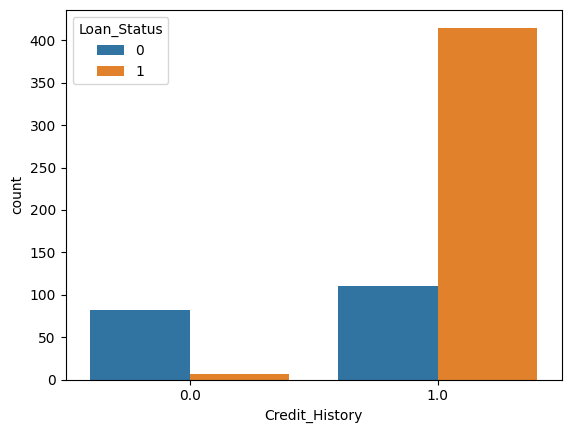

Rows in holdout
185
30% test split from the prepared sample
What applicant attributes are associated with approval, and what does an honest baseline model reveal before anyone talks about automated lending decisions?
The project intentionally favors an interpretable workflow and reports where the model succeeds, where it fails, and what would be needed before any real-world use.
The published result shows why a single accuracy number is not enough: approved and not-approved classes behave very differently.
Which selected feature has the clearest observed association?

Published result from the repository notebook. Loan_Status 1 indicates approved in the encoded workflow.
How does the baseline behave by class?
Precision 0.93 · Recall 0.42
Precision 0.76 · Recall 0.98
The project is useful because it makes the boundary between association, model performance, and responsible deployment visible.
Among the selected fields, Credit_History shows the strongest observed relationship with Loan_Status. Income-related variables and education are examined as secondary signals.
The baseline reaches 0.784 accuracy, but the class-level recall split is more informative: it catches nearly all approved cases while missing many not-approved cases.
Calibration, fairness testing, threshold design, out-of-time validation, privacy controls, monitoring, and adverse-action explanations are outside this educational baseline.
A sensible follow-up is not to ship the baseline. It is to improve the experiment.
Public Kaggle Loan Prediction Dataset. The notebook retains Gender, Married, Education, ApplicantIncome, CoapplicantIncome, LoanAmount, Credit_History, and Loan_Status.
Numerical values are filled with the median; categorical values use the mode; selected categorical fields are label-encoded for the baseline.
Logistic Regression with max_iter=2000, using a 70% training / 30% test split and random_state=42.
This is an educational analysis, not a production lending system and not a source of lending decisions. The repository explicitly excludes real applicant data and calls for fairness, calibration, governance, monitoring, and regulatory review in any serious follow-up.